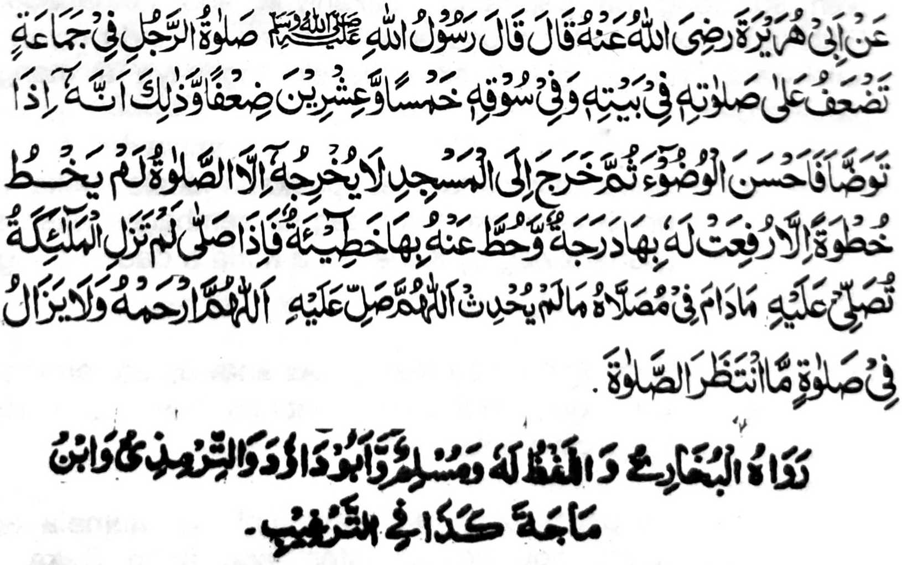

Miyakathitayan ko Abu Hurairah (Radhial-lao Anho) a pitharo iyan a pitharo o Rasulollah (Sallallaho Alaihi Wasallam), "So Sambayang o mama si-i ko Barajoma na makalelebi ko Sambayang iyan si-i ko walay niyan o di na si-i ko tinda niyan sa dowa polo ago lima ka pangkatan go giyanan man na sabap sa mata-an a sekaniyan na anda den i kapagabedas iyan a phiya-piya-an niyan so abdas iyan oriyan niyan na lomiyo a somong sa Masjid a daden a ped a liniyowan niyan inonta so kapezambayang iyan na daden a milakad iyan a salakad bo inonta na iporo rekaniyan so isa a pangkatan ago ponasen rekaniyan so isa a dosa na anda den i kazambayang iyan na diden mapipinda so manga Mala-ikat sa kapezalawat iran non a (gi-i ran tharo-on) 'Ya Allah na kalimo-on Ka sekaniyan!' na asar ka mo-ontod sa Masjid a phenayaw ko phakatondog a Sambayang na aya balas iyan na lagid o ba tomataros a gi-i zambayang.”
Si-i ko Hadith a paganay na so Kapakalelebi o Sambayang a Barajoma ko Sambayang a tarambisa na miya-aloy a dowa polo ago pito ka pangkatan, ogaid na sangka-iya Hadith na dowa polo a go lima. Matas a kiyapagosaya si-i o manga Olama sangka-iya kiyapakambida iran. Kati-i so saba-ad ko manga osayan niran non.
1. "So kiyapakambida pho-on sa dowa polo ago lima taman sa dowa polo ago pito na sabap ko kapakambibida o Ikhlas ko manga tao."
2. "Si-i ko manga Sirri (di khaneg so batiya') a manga Sambayang (lagid o Zuhr ago so 'Asr) na dowa polo ago lima, ogaid na so Jahri (Pekhaneg so Batiya') a manga Sambayang (lagid o Soboh, Maghrib ago Isha) na dowa polo ago pito.'
3. "Igira Soboh ago Isha, a manga masa a di kasosorot sabap ko katenggao ago kaliboteng, na dowa polo a go pito ogaid na so manga ped na dowa polo ago lima."
4. "Si-i ko paganay na dowa polo ago lima, ogaid na inipangkat o Allah (sabap ko masasalebo a limo iyan ko mang Ummat o Nabi (Sallallaho ’Alaihi Wasallam)) sa dowa polo ago pito."
Saba-ad pen ko manga ped a Olama a madakel pen a mapiya a osayan a minibegay ran. Pitharo iran a so balas o Sambayang a Barajoma na kena ba bo dowa polo ago lima takep ka ogaid na maka dowa polo a go lima matheketakep, pembaloy a telo polo ago telo ka miliyon ago lima gatos ago lima polo ago pat nggibo ago pat gatos ago telo polo ago dowa (33,554,432) takep. Kena ba ini phakasobra ko Limo o Allah. Opama ka so kibagaken bo ko isa a Sambayang na khasiksa so tao sa Naraka sa isa ka Huqb (lagid o kiya-aloy niyan ko miya ona a pinto), na so mambo so balas o isa a Sambayang a barajoma na khapakay a matarima a akal so kala iyan a tanto.
So Nabi (Sallallaho 'Alaihi Wasallam) na miya-osay niyan pen reketano so kapephakala o balas o tao opama ka, oriyan o kapaka-pagabedas iyan, na lomiyo ko walay niyan a ayabo a niat iyan na phamangeped ko Barajoma a Sambayang si-i sa Masjid. Omani milakad iyan na makakowa sa isa a balas ago makalowa' sa isa a dosa. So Banu Salma, a isa ka lokes sa Madina, na mawatan so manga walay ran sa Masjid. Kabaya iran a tomogalen siran sa obay a Masjid. Ogad na so Nabi (Sallallaho 'Alaihi Wasallam) na pitharo iyan kiran a, "Sangkano den sangkanan a darepa iyo. Omani milakad iyo sa kapezong iyo sa Masjid na ipezorat a (balas a mapiya) bagi-an niyo Miyakathitayan sa Hadith: "Aya ibarat o tao a magabedas sa walay na oriyan niyan na somong sa Masjid na lagid o tao a oriyan o kiyasolot iyan sa Ihram si-i ko walay niyan na somiyong sa Hajj."
Liyo roo pen, na si-i ko saba-ad a Hadith, na so Nabi (Sallallaho 'Alaihi Wasallam) a tomiyoro pen sa salakao a amal a mala-i balas lagid o kanayao sa Masjid ko oriyan o kapasad o Sambayang, na so manga Mala-ikat na diden mapipinda so kipephamangeni niran ko tao sa rila ago limo. So manga Mala-ikat na da-a manga dosa iran ago manga soti a ka-aden o Allah. So katangked o katatarima-a ko pangeni ran na tanto a marayag.
So Muhammad bin Sammak, a kababantogan a Alim ago Auliya na aya kiyapatay niyan na si-i ko magatos ago telo a omor iyan. Sekaniyan na gi-i makazambayang sa dowa gatos rak'at a Sunnah oman gawi-i. Pitharo iyan, "Si-i ko soled o pat polo ragon, na dako den makalepas sa paganay a Takbir ko Sambayang a barajoma, inonta bo so miyaka isa ko masa a kiyapatay o ina aken." Pitharo Iyan pen, "Soden so kiyapakalepas aken sa Barajoma na sabap sa katawan ko a so Sambayang a Barajoma na makalelebi sa dowa polo ago lima, na mizambayang ako sa (tarambisa sa) miyaka dowa polo ago lima a ithapal aken non. Miyaneg aken sa taginepen a aden a mitharo, 'Muhammad! Mizambayang ka sa miyakadowa polo ago lima (a thapalan ka so miyalepas ka), ogaid na antone-e i arangan ka ko gi-i katharo-a o manga Mala-ikat to ’Ameen’?" Miyapanothol ko madakel a Hadith a igira pitharo o Imaam so 'Ameen' ko oriyan o Fatihah, na so mambo so manga Mala-ikat na gi-i ran tharo-on so 'Ameen' na so langon o tao a miperengan o katharo-a niyan ko 'Ameen' so manga Mala-ikat na so langon o miya-ona a dosa niyan na langon perila-an o Allah. Ayabo a kapenggola-ola ini na si-i bo ko Barajoma a Sambayang. Sabap ro-o na so Maulana Abdul Hai ko kiyapa-nothola niyan sangka-iya tothol na pitharo iyan, "Apiya so tao na tharambisa zambayang sa maka sanggibo, na di niyan den katapalan so kapiya o Sambayang a Barajoma." Tantowa-i a marayeg. Kena ba giyabo a kiya da iyan ko 'Ameen' o manga Malaikat, ka sopen so barakah o Barajoma ago so pangeni o manga Mala-ikat ko oriyan o Sambayang, go so manga ped a mapiya a madadalemon na miyapapason. Tangked den tano ko manga pamikiran tano a ayabo a kakhaparoliya tano ko pangeni o manga Mala-ikat na amay ka so Sambayang na kiaphiya-piya-an. Opama ka so Sambayang o tao na da niyan phiya-piya-i na so Sambayang na (katharo ko Hadith) a iphapes sa paras iyan a lagid o boringen a togak, na anda manaya-i kiphamangeni non o manga Mala-ikat?